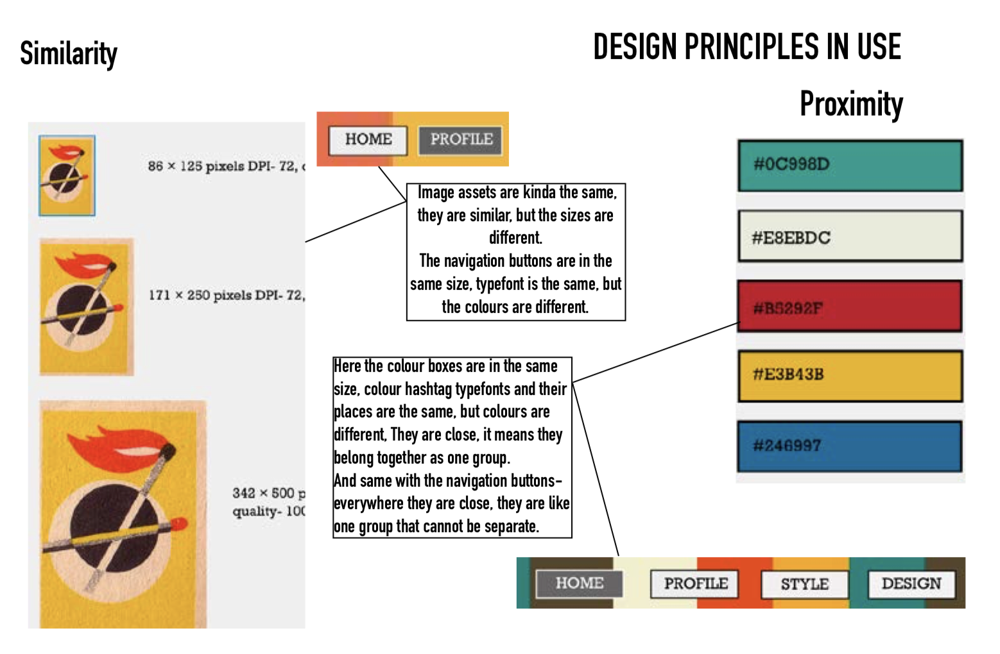

basic web.
VINTAGE- REINVENTED
First thing I ever made was Vintage style moodboard, I had to learn photoshop that I have never used and that was big challenge. At first I did not now how to crop images and put in one picture together.

...then I had to make a research about vintage typography, history and colour schemes. I understood what is "sherif" in letters and how much fun is to make collages from a scratch
Vintage reinvented
DESIGN AND PROCESS
This work was almost the hardest thing in this theme. Understanding design principles was tricky. A lot of ideas was very similar to each other, like "Proximity" and "Similarity"

This was the first time I sketched my personal logo. I learned that logo will be great if it works in black and white. I'm working on it still.
Design and Process
XD VINTAGE PROTOYPES
This was the first time I worked with Adobe XD.
I understood the importance of user expierience. For example, centred text is hard to read, but if you align the text to the left side, it is easier to read.
Mobile XD
Web XD
RESPONSIVE WEBSITE
I could say that this was the biggest struggle that gave me a lot of headaches. I had to make a responsive website and understand how grid works. This gave me an opportunity to code with creativity changing colours, layouts making breakingpoints.
Responsive website